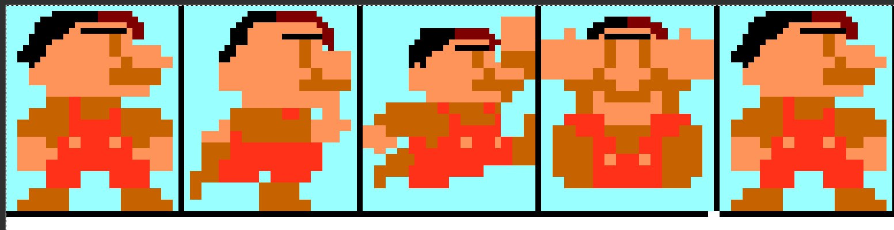

<!doctype html>

<html>

<head>

<meta charset="UTF-8">

<title>Super Timurio 34</title>

</head>

<body>

</body>

</html>

<body bgcolor="#1e140a"></body>

<a href="https://youtu.be/w6-NQBh3Tv8"><h1 align="center">Скачать Супер Тимурио 34</h1></a>

]

<h1 style="color: #020e6e;">🔥 ВЕЛИЧАЙШИЙ ПЛАТФОРМЕР В ИСТОРИИ ГЕЙМИНГА 🔥</h1>
<h1 style="color: #020e6e;">Ты готов изменить представление о жанре платформеров? Забудь всё, что ты знал раньше! Этот проект — революция, переворот, перерождение игровой индустрии.</h1>

<h1 style="color: #020e6e;">Идеальный геймплей: Каждое движение отточено до пикселя. Прыжки – плавные, а управление – настолько отзывчивое, что кажется, будто персонаж становится продолжением твоего сознания.
</h1>

<h1 style="color: #020e6e;">Графика, превосходящая реальность: Это не просто пиксели, это цифровое искусство, от которого замирает дыхание. Анимации? Божественны. Освещение? Фантастическое.</h1>
<h1 style="color: #020e6e;">Саундтрек, способный вызывать мурашки: Композиторы вложили в него душу. Каждая нота усиливает атмосферу, каждый аккорд заставляет сердце биться быстрее.</h1>
<h1 style="color: #020e6e;">Непревзойдённая боёвка: Забудь о тупом спаме кнопок! Здесь только тактика, реакция и стиль. Твои атаки ощущаются, каждая победа ощущается, даже поражения – это урок, а не наказание.</h1>
<h1 style="color: #020e6e;">Платформер, который перепишет историю: Этот проект уже называют шедевром, эталоном, иконой жанра. После него другие игры покажутся серыми и скучными. Приготовься. История платформеров никогда не будет прежней</h1>

<a href="https://krakenfiles.com/view/IrbdmfY7dl/file.html"><h1 align="center">Скачать Супер Тимурио 34</h1></a>